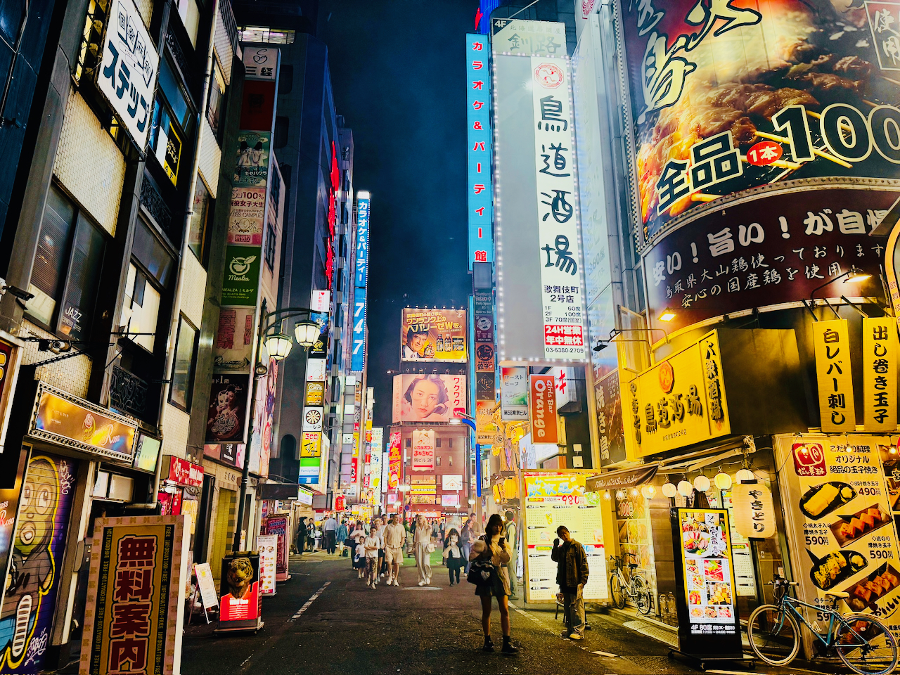

Tokio

Willkommen in der Megacity
Tokio, die pulsierende Hauptstadt Japans, vereint zukunftsweisende Technologie und jahrhundertealte Traditionen auf einzigartige Weise. Zwischen gewaltigen Wolkenkratzern und leuchtenden Neonschildern finden sich stille Shinto-Schreine, historische Tempel und ruhige Parkanlagen.
Top-Sehenswürdigkeiten
Die Metropole bietet eine unendliche Vielfalt an Highlights:
- Sensō-ji: Tokios ältester und bekanntester buddhistischer Tempel im historischen Viertel Asakusa.
- Shibuya Crossing: Die berühmteste und geschäftigste Fußgängerkreuzung der Welt.
- Tokyo Skytree: Mit 634 Metern das höchste Bauwerk Japans mit spektakulärer Panoramaaussicht.
- Meiji-Schrein: Ein eindrucksvoller Shinto-Schrein inmitten eines dichten Stadtwaldes.
Fünf Stadtteile, fünf Welten
Jedes Viertel in Tokio besitzt eine völlig eigene Atmosphäre:
- Shinjuku: Wolkenkratzer, pulsierendes Nachtleben und traditionelle Izakaya-Gassen.
- Akihabara: Das weltbekannte Zentrum für Anime, Manga, Gaming und Elektronik.
- Harajuku: Der Hotspot für ausgefallene Jugendkultur, Fashion und Streetwear.
- Ginza: Tokios elegantes Viertel für Luxus-Shopping und gehobene Gastronomie.
Kulinarik erleben
Von frischem Sushi auf den Märkten über dampfende Ramen-Schüsseln in kleinen Straßenküchen bis hin zu Michelin-Stern-Restaurants – Tokio zählt zu den vielfältigsten kulinarischen Hauptstädten der Welt.
Mehr lesenUnterwegs in Tokio
Das öffentliche Nahverkehrsnetz gehört zu den pünktlichsten und effizientesten der Welt. Mit der U-Bahn und der umschließenden JR Yamanote-Ringlinie lassen sich nahezu alle Sehenswürdigkeiten schnell und unkompliziert erreichen.
Mehr lesenBeste Reisezeit & Tipps
Die beliebtesten Reisezeiten sind der Frühling (Ende März bis April) zur Kirschblüte (Sakura) und der Herbst (Oktober bis November) mit milder Temperatur und farbenprächtiger Laubfärbung.
Mehr lesen